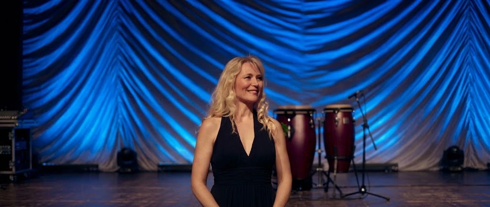
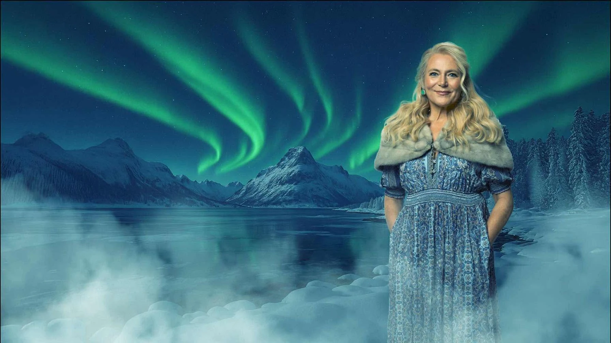

Arbeid pågår – forslag til ny nettside. Stilene er bevisst ulike for sammenligning.
Marianne Juvik Sæbø
Designforslag til nettsiden
Her er forslagene til ny stil for forsiden, med hav, fjord, skog og natur. Klikk på et forslag for å se hele forsiden. Den virker både på PC og mobil. Undersidene (ÁLFR, Haugtussa osv.) er foreløpig som i dag.
Forslag 3 – samme oppsett, ny stemning
Oppsettet er det samme som i dag. Bare farger, skrift og bilder er nye.
 Forslag A
Forslag A
Fjordlys – kyst og tåke
Lyst og luftig, nærmest Helene Bøksles side. Tåkeblått og skifergrått, tynn og elegant skrift.
 Forslag B
Forslag B
Skog og mose
Lin og bjørkenever med granskoggrønt og mose. Varmere og mer jordnært.
 Forslag C
Forslag C
Hav og kveldslys
Sand, havblått og gyllent kveldslys, med følelse av horisont og åpent hav.
Eksklusive forslag – nytt oppsett
Helt nytt oppsett, inspirert av nettsidene til store internasjonale artister. Innholdet er det samme som i dag.
 Eksklusiv 1
Eksklusiv 1
Kinematisk – i Adeles ånd
Mørk og filmatisk. Store bilder over hele skjermen, svært lite tekst og en diskret meny i hjørnene.

Eksklusiv 1bKinematisk – med scenebilde
Samme som eksklusiv 1 og Marianne på samme sted, men med det ekte blå sceneteppet bak henne og mørkere bak navnet.

Eksklusiv 2Klassisk eleganse – i Bocellis ånd
Midnattsblått og champagnegull, klassisk skrift og «Álfr» i gull håndskrift. Konsertprogrammene ligger på en tidslinje.
Til sammenligning: forsiden slik den er i dag. Forslagene er skisser til å velge mellom. Den ekte nettsiden er ikke endret.